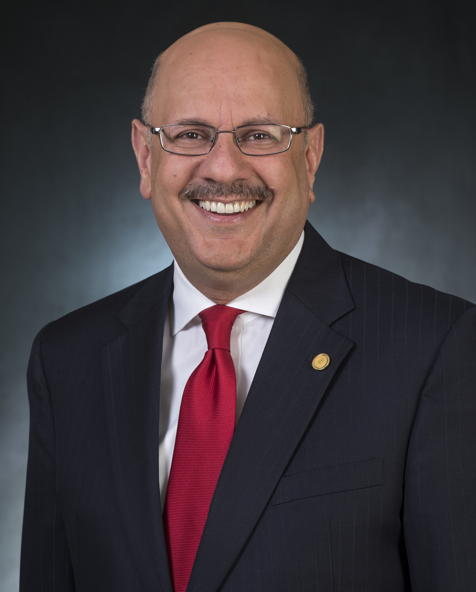

Tuesday June 27, 2017
Keynote Speaker: Farnam Jahanian,
Provost and Chief Academic Officer at Carnegie Mellon University
|
Title:The Cybersecurity Imperative
|
Abstract
The Internet ecosystem plays a growing and vital role in tightly integrating the economic, political, and cultural fabric of society. As a result of this interdependent, cyber-enabled society, we remain vulnerable to a wide range of threats that impact the security, reliability, availability, and overall dependability of information infrastructure and resources in every sector of our economy. In this talk, I will reflect on the evolution of Internet threats by exploring how attackers' changing technological means have intertwined with their shifting social, behavioral, and economic motives to create today's diverse range of threats. I will also focus on the emerging trends that are shaping the future landscape for cybersecurity and privacy, namely the unprecedented access to data and analytics, the fusion of technologies blurring the lines between the physical, cyber and biological worlds, and the rise of automation and robotics. As future security and privacy challenges continue to follow technology trends and Internet adoption patterns, we must develop a robust R&D innovation ecosystem, spanning both the public and private sectors, to bridge the gap between research and practice and accelerate the adoption of new technologies.
|
Bio

Farnam Jahanian serves as Provost and Chief Academic Officer at Carnegie Mellon University. Prior to CMU, Jahanian led the National Science Foundation Directorate for the Computer and Information Science and Engineering (CISE) from 2011 to 2014. During his tenure at NSF, the CISE Directorate led several administration initiatives in collaboration with the White House Office of Science and Technology Policy, including the National Robotics Initiative, the National Big Data Research and Development Initiative and US Ignite. Jahanian was on the faculty in the College of Engineering at the University of Michigan (UM) from 1993 to 2014, where served as Chair for Computer Science and Engineering from 2007 to 2011 and the Director of the Software Systems Laboratory from 1997 to 2000. His work on Internet routing stability and security led to the formation of Arbor Networks, a network security company he co-founded in 2001, where he remained as Chairman until its acquisition in 2010. Jahanian's research interests span distributed computing, Internet security and network protocols and architectures. His work on Internet routing stability and convergence has been highly influential within both the network research and the Internet operational communities and was recognized with an ACM SIGCOMM Test of Time Award in 2008. A member of dozens of advisory boards and panels, he currently serves as chair of the National Research Council's Computer Science and Telecommunications Board (CSTB) and is a board member of the Computing Research Association (CRA) and National Center for Women and Information Technology (NCWIT). He is a fellow of ACM, IEEE and AAAS.
|
Tuesday June 27, 2017
Keynote Speaker: Bryan Salesky,
CEO, Argo AI
|
Title:A Decade of Self-Driving Cars
|
Abstract
This year marks the 10th anniversary of the DARPA Urban Challenge. In 2007, the term self-driving cars wasn't used much; robotics researchers referred to them as 'autonomous systems', and it was still very much an academia-led endeavor. The research community of robotics developers had to scramble for funding to sell the idea that autonomous systems would someday transform our roadways into a safer and more efficient mode of transport. Now, we have dozens of startup companies chasing the opportunity, and every major auto manufacturer in the world is creating buzz about launching a self-driving car in the next decade. Billions of dollars have been committed and now, we're looking at a new race - who will be first to launch a commercially viable, fully self-driving car that does not rely on the help of a human driver. We've learned a lot in the last 10 years, and this talk summarizes some of the most important lessons learned, while we also discuss the many challenges involved in bringing this transformative technology to the world.
|
Bio
Bryan Salesky is passionate about delivering promising robotics technology into products and systems that will improve safety, productivity and that will ultimately improve people's lives. At Carnegie Mellon University's National Robotics Engineering Center, Bryan managed a portfolio of the center's largest commercial programs that included autonomous mining trucks for Caterpillar, a robotic paint removal system for aircraft, and autonomous driving systems for the military. In 2007, Bryan led the software engineering for Tartan Racing, Carnegie Mellon's winning entry in the DARPA Urban Challenge. Bryan departed CMU and joined the Google self-driving car team in 2011 to continue the push toward making self-driving cars a reality. While at Google, Bryan was the Director of Hardware Engineering and was responsible for the development and manufacture of their portfolio of hardware which included self-driving sensors, computers, and numerous vehicle development programs. Bryan graduated from the University of Pittsburgh with a Bachelor's degree (2002) in Computer Engineering.
|